Análise exploratória de dados
Fomos contratados por uma grande empresa distribuidora de vinhos. Nosso cliente deseja melhorar as vendas entregando produtos que agradem os diversos perfis de clientes. O foco do nosso projeto aqui é desenvolver uma análise exploratória nos dados de avaliações de vinhos.
Uma análise exploratória bem elaborada consiste em algumas etapas:
- Compreensão do negócio
- Compreensão dos dados
- Preparar os dados (limpeza e tratamento)
- Análise de dados (extrair informações relevantes e responder perguntas)
- Avaliação dos resultados
Nosso objetivo ao concluir esse projeto é responder as seguintes perguntas:
- De onde vem o melhor vinho ?
- O preço do vinho está relacionado com a qualidade ?
- Certas variedades de uvas são de maior qualidade ?
- Qual é o melhor vinho em cada faixa de preço ?
- Que palavras são mais utilizadas para descrever um vinho ?
Vamos começar!
Verificando os dados
Agora que já sabemos que perguntas devemos responder durante a análise, vamos dar uma olhada nos dados. Começaremos com alguns imports:
import pandas as pd
import numpy as np
import matplotlib.pyplot as plt
import seaborn as sns
sns.set()
Utilizaremos a biblioteca Seaborn, uma opção de biblioteca para visualização baseada na Matplotlib que fornece uma interface mais simples para plotar os gráficos (escreveremos menos código).
Vamos examinar o dataset:
df = pd.read_csv("winemag-data-130k-v2.csv")
df.head()
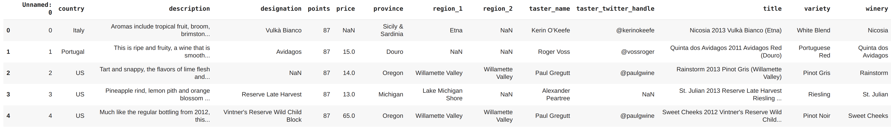
df.columns
Index(['Unnamed: 0', 'country', 'description', 'designation', 'points',
'price', 'province', 'region_1', 'region_2', 'taster_name',
'taster_twitter_handle', 'title', 'variety', 'winery'],
dtype='object')
Vamos elaborar um pequeno sumário para essas colunas e ver o que iremos utilizar em nossa análise:
- unnamed - parece ser uma coluna de índice que podemos remover
- country - país onde o vinho foi feito (interessante)
- description - descrição do vinho
- designation - vinhedo dentro da adega de onde as uvas que fizeram o vinho foram coletadas.
- points - é o número de pontos que o vinho obteve em sua avaliação (precisamos entender a escala de pontos)
- price - preço da garrafa de vinho
- province - é a província (estado) onde o vinho foi feito
- region_1 - é a região onde o vinho foi feito
- region_2 - região mais específica dentro de uma vitícola (podemos remover isso)
- taster_name - nome do revisor
- taster_twitter_handle - perfil do Twitter do avaliador
- title - nome do vinho analisado (o ano de fabricação está no título)
- variety - tipo de uvas utilizadas na fabricação do vinho
- winery - adega onde o vinho foi feito.
Agora, uma olhada rápida nos tipos de dados:
df.info()
<class 'pandas.core.frame.DataFrame'>
RangeIndex: 129971 entries, 0 to 129970
Data columns (total 14 columns):
# Column Non-Null Count Dtype
--- ------ -------------- -----
0 Unnamed: 0 129971 non-null int64
1 country 129908 non-null object
2 description 129971 non-null object
3 designation 92506 non-null object
4 points 129971 non-null int64
5 price 120975 non-null float64
6 province 129908 non-null object
7 region_1 108724 non-null object
8 region_2 50511 non-null object
9 taster_name 103727 non-null object
10 taster_twitter_handle 98758 non-null object
11 title 129971 non-null object
12 variety 129970 non-null object
13 winery 129971 non-null object
dtypes: float64(1), int64(2), object(11)
memory usage: 13.9+ MB
Ao todo temos 129.971 linhas e 14 colunas no dataset. Existem algumas colunas com dados ausentes e podemos descartar algumas dessas colunas, como por exemplo region_2, taster_name e taster_twitter_handle.
df.describe()
| Unnamed: 0 | points | price | |
|---|---|---|---|
| count | 129971.000000 | 129971.000000 | 120975.000000 |
| mean | 64985.000000 | 88.447138 | 35.363389 |
| std | 37519.540256 | 3.039730 | 41.022218 |
| min | 0.000000 | 80.000000 | 4.000000 |
| 25% | 32492.500000 | 86.000000 | 17.000000 |
| 50% | 64985.000000 | 88.000000 | 25.000000 |
| 75% | 97477.500000 | 91.000000 | 42.000000 |
| max | 129970.000000 | 100.000000 | 3300.000000 |
O describe() nos mostra uma distribuição de pontos para uma garrafa de vinho, onde o mínimo é 80 e o máximo é 100. Também é possível notar que a garrafa de vinho mais barata custa $4 e a mais cara $3.300. Segundo esse site temos a seguinte classificação por pontos:
- 98-100 - Clássico
- 94-97- Soberbo
- 90-93- Excelente
- 87-89- Muito bom
- 83-86- Bom
- 80-82- Aceitável
Por meio da função value_counts() podemos contar quantos vinhos foram avaliados por cada país:
df["country"].value_counts()
US 54504
France 22093
Italy 19540
Spain 6645
Portugal 5691
Chile 4472
Argentina 3800
Austria 3345
Australia 2329
Germany 2165
New Zealand 1419
South Africa 1401
Israel 505
Greece 466
Canada 257
Hungary 146
Bulgaria 141
Romania 120
Uruguay 109
Turkey 90
Slovenia 87
Georgia 86
England 74
Croatia 73
Mexico 70
Moldova 59
Brazil 52
Lebanon 35
Morocco 28
Peru 16
Ukraine 14
Serbia 12
Czech Republic 12
Macedonia 12
Cyprus 11
India 9
Switzerland 7
Luxembourg 6
Bosnia and Herzegovina 2
Armenia 2
Slovakia 1
China 1
Egypt 1
Name: country, dtype: int64
Note que a maioria dos vinhos avaliados é dos EUA, França, Itália, Espanha e Portugal.
Também podemos utilizar value_counts() para verificar quais tipos de uva foram mais utilizadas na fabricação dos vinhos avaliados:
df["variety"].value_counts()
Pinot Noir 13272
Chardonnay 11753
Cabernet Sauvignon 9472
Red Blend 8946
Bordeaux-style Red Blend 6915
...
Cabernet Sauvignon-Barbera 1
Sauvignonasse 1
Forcallà 1
Meseguera 1
Bobal-Cabernet Sauvignon 1
Name: variety, Length: 707, dtype: int64
Nossa próxima tarefa é limpar os dados, agora que verificamos podemos concluir que os campos: Unamed: 0, designation, region_1, region_2, taster_name e taster_twitter_handle podem ser removidos, pois não fornecem dados úteis para nossa análise.
Limpando os dados
A primeira coisa a ser feita no processo de limpeza dos dados é uma cópia do DataFrame. Em seguida vamos remover as colunas que não iremos utilizar e tratar os problemas identificados.
A função copy() faz uma cópia do DataFrame:
df1 = df.copy()
Agora que fizemos a cópia, vamos começar removendo as colunas que não vamos precisar para nossa análise:
df1 = df1.drop(["Unnamed: 0", "designation", "region_1", "region_2", "taster_name", "taster_twitter_handle"], axis=1)
df1.head()
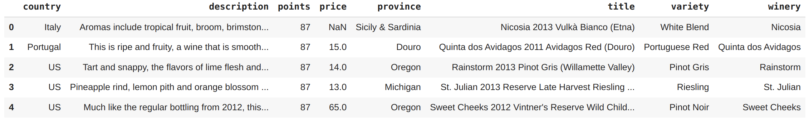
Aida temos o problema dos dados ausentes para resolver:
df1.info()
<class 'pandas.core.frame.DataFrame'>
RangeIndex: 129971 entries, 0 to 129970
Data columns (total 8 columns):
# Column Non-Null Count Dtype
--- ------ -------------- -----
0 country 129908 non-null object
1 description 129971 non-null object
2 points 129971 non-null int64
3 price 120975 non-null float64
4 province 129908 non-null object
5 title 129971 non-null object
6 variety 129970 non-null object
7 winery 129971 non-null object
dtypes: float64(1), int64(1), object(6)
memory usage: 7.9+ MB
Podemos fazer alguns cálculos de proporção na coluna de preço (que é bastante importante para nossa análise) e apresenta dados ausentes:
print("{:.0%}".format(df1["price"].count() / df1.shape[0]))
93%
Ok, se removermos as linhas com valores nulos da coluna preço (price), ficaremos com 93% das linhas restantes. Como a base de dados é suficientemente grande, podemos remover essas linhas filtrando também por país e uvas (country e variety) que também contém dados nulos.
df1 = df1.dropna(subset=["country", "price", "variety"])
df1.info()
<class 'pandas.core.frame.DataFrame'>
Int64Index: 120915 entries, 1 to 129970
Data columns (total 8 columns):
# Column Non-Null Count Dtype
--- ------ -------------- -----
0 country 120915 non-null object
1 description 120915 non-null object
2 points 120915 non-null int64
3 price 120915 non-null float64
4 province 120915 non-null object
5 title 120915 non-null object
6 variety 120915 non-null object
7 winery 120915 non-null object
dtypes: float64(1), int64(1), object(6)
memory usage: 8.3+ MB
Agora nosso DataFrame está sem nulos e pronto para a etapa de análise!
Análise exploratória
Sempre que houver dúvidas por onde começar, visualize os dados! Vamos olhar para a distribuição dos pontos dados durante as avaliações dos vinhos, parece um bom ponto de partida.
plt.figure(figsize=(10, 7))
plt.hist(data=df1, x='points',
bins=np.arange (80, df1['points'].max()+1, 1),
color = 'purple')
plt.xlim(80,100)
plt.title('Distribuição dos pontos', fontsize=16)
plt.xlabel('Pontos')
plt.ylabel('Frequência');
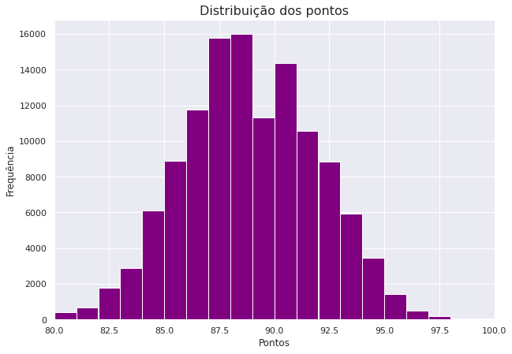
Existe uma distribuição quase normal dos pontos variando a escala entre 80 e 100. Vamos ver quais países estão no Top 10 que mais produzem vinhos.
country_top_10 = df1["country"].value_counts()[:10]
country_top_10
US 54265
France 17776
Italy 16914
Spain 6573
Portugal 4875
Chile 4415
Argentina 3756
Austria 2799
Australia 2294
Germany 2120
Name: country, dtype: int64
Com base nesse filtro podemos gerar um gráfico para comparar os países que mais tiveram vinhos avaliados:
plt.figure(figsize=(10, 7))
country_top_10.plot(kind='bar', color = 'purple')
plt.title('Número de classificações de vinhos por país', fontsize = 16)
plt.xlabel('País')
plt.ylabel('Total de avaliações');
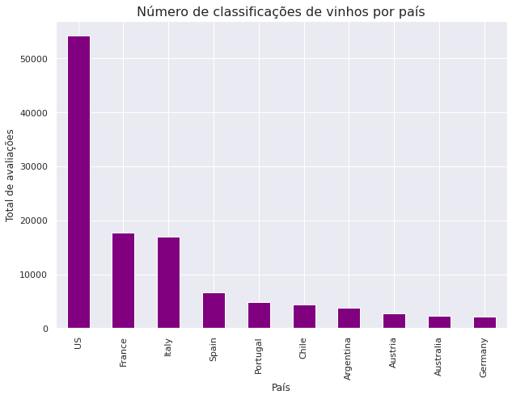
Com base nessa ordenação do gráfico acima, vamos investigar quantos países produzem vinho de melhor qualidade de acordo com as classificações.
melhor_qualidade = df1.groupby("country").agg("mean")
melhor_qualidade = melhor_qualidade.sort_values(by="points", ascending=False)[:10]
melhor_qualidade.style.background_gradient(cmap='Purples',high=0.5, subset=["points"])
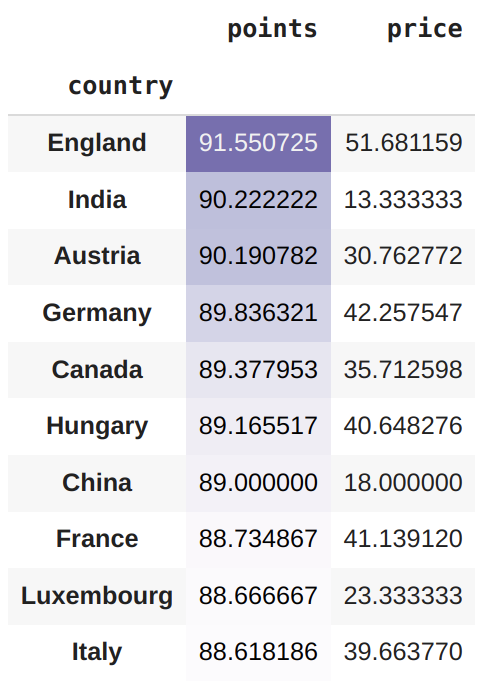
Podemos gerar um gráfico desse filtro:
y = melhor_qualidade.index.to_series()
x = melhor_qualidade["points"]
plt.figure(figsize=(10, 7))
plt.xlim(80, 92)
sns.barplot(x=x, y=y, palette='Purples_r')
plt.title('Top 10 média de vinhos de melhor qualidade por país', fontsize = 16)
plt.xlabel('Média de pontos')
plt.ylabel('País');
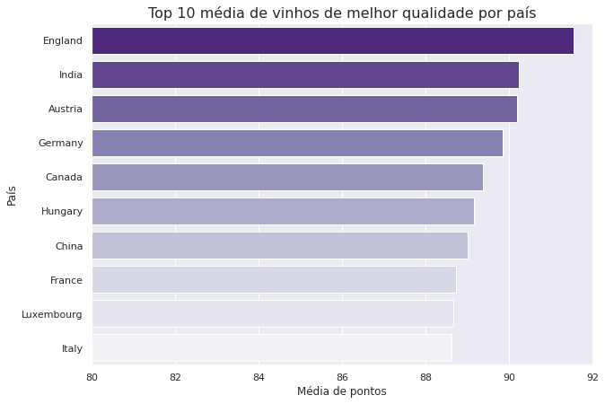
Ao verificar a média de pontos, podemos perceber que o país com melhor avaliação (que produziu o vinho de melhor qualidade) foi a Inglaterra. Isso ocorre, porque talvez haja menos vinhos da Inglaterra no nosso DataFrame e eles tenham uma pontuação alta, representando um aumento na média. Vale a pena investigarmos isso mais a fundo, podemos olhar para os países com pontuação máxima acima de 95 (vinhos excelentes).
# número de vinhos por país com classificações mais altas 95-100
high_scores = df1[df1["points"]>=95]
high_scores["country"].value_counts()
US 991
France 509
Italy 326
Austria 103
Portugal 96
Germany 62
Spain 51
Australia 47
Argentina 11
Hungary 5
England 3
South Africa 3
Chile 2
New Zealand 2
Name: country, dtype: int64
Os países com classificação mais alta 95-100 pontos, diferem do nosso gráfico de pontuações mais altas com base nas médias. Podemos criar um gráfico do tipo boxplot que nos permitirá ver o máximo, o mínimo e a média das pontuações por cada país. Como essa base de dados apresenta mais vinhos avaliados dos EUA, é provável que haja uma grande variedade de vinhos do país, enquanto a Inglaterra, que teve a melhor pontuação média, apresenta menos vinhos na base de dados, o que resulta em uma comparação injusta.
plt.figure(figsize=(20, 18))
sns.boxplot(data=df1, x='points', y='country', color = 'Purple')
plt.title('Pontos por país', fontsize = 16)
plt.xlabel('Pontos')
plt.ylabel('País');
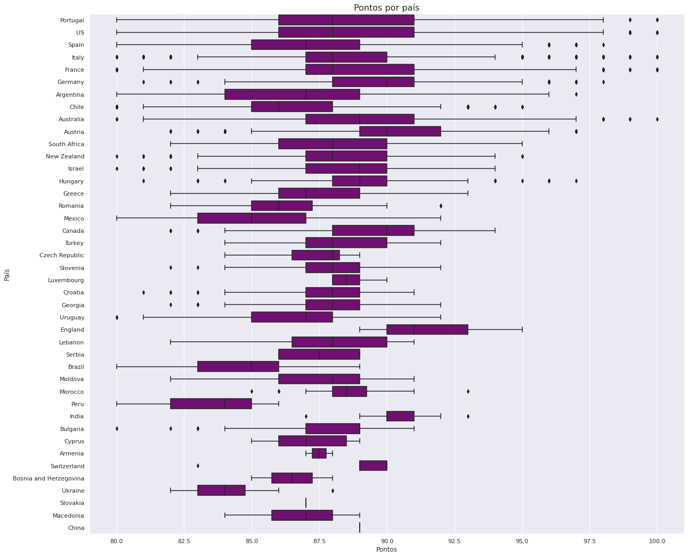
Embora os vinhos da Inglaterra tenham os pontos mais altos em média, os vinhos de Portugal, EUA, Itália, França e Austrália, receberam uma pontuação perfeita de 100. Há mais vinhos desses países na base de dados, por tanto eles receberam uma gama maior de pontos.
Ok, agora que vimos as distribuições de pontos por cada país, vamos investigar o preço do vinho nos países:
average_price = df1.groupby("country").agg("mean")
average_price = average_price.sort_values(by="price", ascending=False)
y = average_price.index.to_series()
x = average_price["price"]
plt.figure(figsize=(12, 8))
sns.barplot(x=x, y=y, palette='Purples_r')
plt.title('Preço médio da garrafa de vinho por país', fontsize = 16)
plt.xlabel('Preço médio ($)')
plt.ylabel('País');
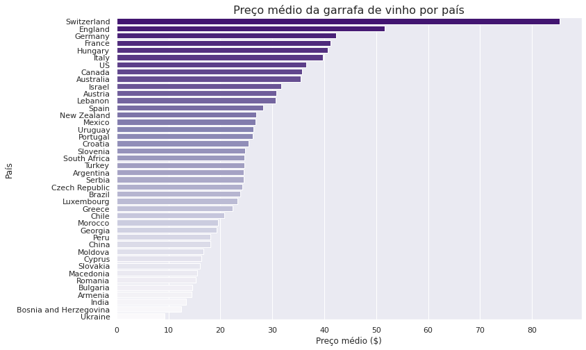
A Suíça, produz o vinho mais caro, com o preço médio da garrafa de mais de $80. Já o vinho da Ucrânia, está no outro extremo, com o preço médio mais baixo, $10 a garrafa. Vamos investigar se o preço está relacionado a qualidade do vinho. A utilização de histogramas para essa tarefa parece um bom plano:
plt.figure(figsize=(10, 7))
bins = np.arange (0, df1["price"].max()+5, 5)
plt.hist(data=df1, x='price', bins=bins, color = 'Purple')
plt.xlim(0,200)
plt.title('Distribuição dos preços dos vinhos', fontsize=16)
plt.xlabel('Preço($)')
plt.ylabel('Frequência');
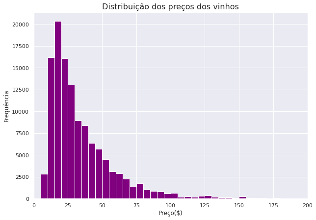
Interessante, os dados de preço dos vinhos apresentam uma distorção grande para a direita. Nesse caso precisamos de uma transformação logarítmica nos dados.
# distribuição normal
df1["price"].describe()
count 120915.000000
mean 35.368796
std 41.031188
min 4.000000
25% 17.000000
50% 25.000000
75% 42.000000
max 3300.000000
Name: price, dtype: float64
# distribuição logarítmica
np.log10(df1["price"].describe())
count 5.082480
mean 1.548620
std 1.613114
min 0.602060
25% 1.230449
50% 1.397940
75% 1.623249
max 3.518514
Name: price, dtype: float64
Agora utilizando os dados com a transformação logarítmica para o nosso histograma:
plt.figure(figsize=(12, 8))
bins = 10 ** np.arange(0.5, 3.5 + 0.05, 0.05)
ticks = [1, 3, 10, 30, 100, 300, 1000, 3000, 10000]
plt.hist(data=df1, x='price', bins=bins, color='Purple')
plt.title('Distribuição dos preços dos vinhos', fontsize=16)
plt.xscale('log')
plt.xticks(ticks, ticks)
plt.xlabel('Preço($)')
plt.ylabel('Frequência');
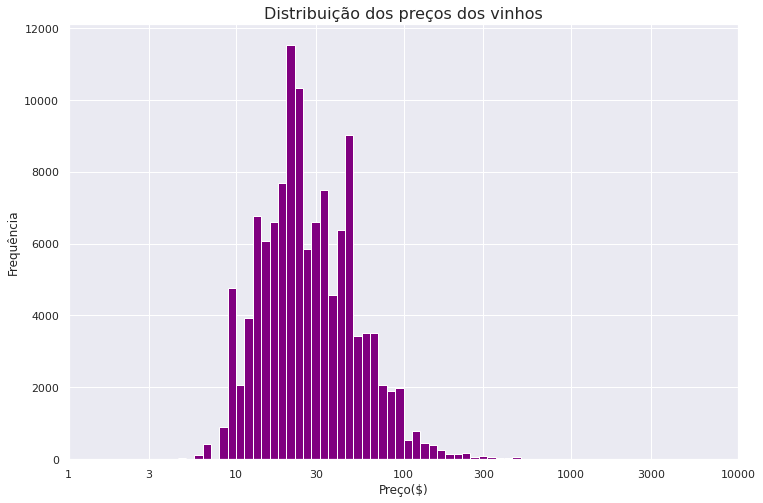
Bem melhor! Agora é possível ver uma distribuição (quase normal). Existe um salto na região dos 10 dólares e um pico mais visível em pouco mais de 20 dólares. Depois temos outro pico acima de $50. Agora podemos plotar um gráfico do tipo scatter para visualizar se existe uma correlação entre a pontuação e o valor da garrafa.
x = [1, 3, 10, 30, 100, 300, 1000, 3000, 10000]
plt.figure(figsize=(12, 8))
sns.regplot(x='price', y='points', data=df1, color='Purple', logx=True, scatter_kws={'alpha':0.3})
plt.title("Pontos vs. Preço", fontsize=14)
plt.xscale('log')
plt.xticks(x, x)
plt.xlabel("Preço($)")
plt.ylabel("Pontos");
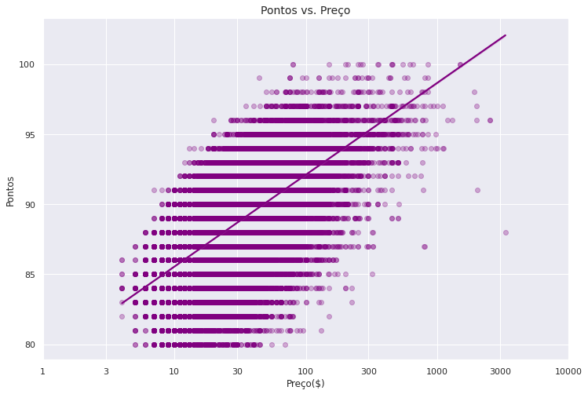
O gráfico nos mostra uma relação positiva entre as duas variáveis (pontuação e preços), ou seja, vinhos mais caros tendem a receber melhores avaliações. Também é possível observar dois pontos mais afastados, um na região dos $4 e outro pouco depois de $3000. Vamos listar esses dois valores para descobrir quais vinhos são esses, buscando pelo valor máximo e mínimo:
df1[df1["price"] == df1["price"].min()][:1]
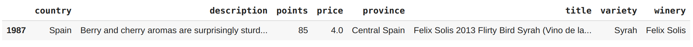
df1[df1["price"] == df1["price"].max()][:1]
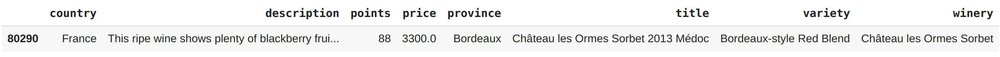
Temos um vinho Espanhol com 85 pontos de classificação que custa $4 a garrafa e um vinho Francês de 88 pontos que custa $3.300.
Agora vamos investigar se certas variedades de vinhos (tipos de uva) são de melhor qualidade. Para isso podemos filtrar uma amostra de 20 melhores vinhos e ver como eles pontuam.
df1["variety"].value_counts()[:20]
Pinot Noir 12785
Chardonnay 11077
Cabernet Sauvignon 9384
Red Blend 8466
Bordeaux-style Red Blend 5340
Riesling 4971
Sauvignon Blanc 4780
Syrah 4086
Rosé 3261
Merlot 3061
Zinfandel 2708
Malbec 2593
Sangiovese 2377
Nebbiolo 2331
Portuguese Red 2196
White Blend 2167
Sparkling Blend 2027
Tempranillo 1788
Rhône-style Red Blend 1404
Pinot Gris 1388
Name: variety, dtype: int64
Lembre-se: visualize os dados!
Vamos ao gráfico com boxplot:
plt.figure(figsize=(20, 18))
sns.boxplot(data=df1,
x='variety',
y='points',
color="Purple",
order=df1["variety"].value_counts().iloc[:20].index)
plt.title('Distribuição de pontos por variedade', fontsize = 16)
plt.xlabel('Variedade (uvas)')
plt.ylabel('Pontos')
plt.xticks(rotation=90);
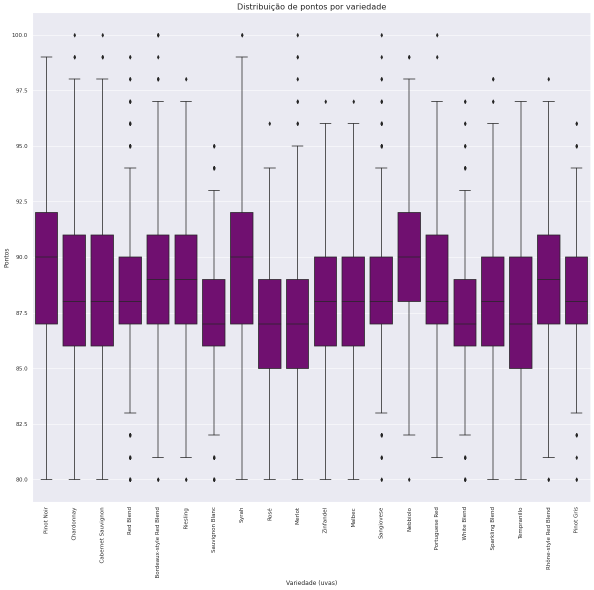
Listando o Top 20 melhores vinhos (com melhor classificação) na base de dados, vemos que a variedade Pinot Noir tende a ter o melhor desempenho, com a pontuação média mais alta.
Já sabemos que a qualidade está fortemente relacionada ao preço, mas nem todos os clientes podem gastar 3000 dólares em uma garrafa de vinho toda semana. Nossa tarefa agora é descobrir o melhor custo-benefício em algumas faixas de preço.
- Até $15
- Entre $15 e $30
- Entre $30 e $50
- Acima de $50
# top 10 custando até $15
under_15 = df1.drop(["description", "province", "winery"], axis=1)
under_15 = under_15[under_15["price"] <= 15]
under_15 = under_15.sort_values(by="points", ascending=False)[:10]
under_15.style.background_gradient(cmap='YlOrRd',high=0.5, subset=["price"])
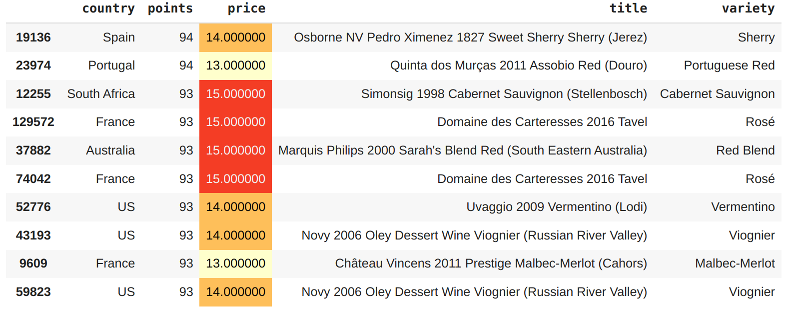
Com base nos dados, uma boa escolha aqui seria um vinho Português de 94 pontos por $13,
Quinta dos Murças 2011 Assobio Red (Douro).
# top 10 com valor entre $15 e $30
between_15_and_30 = df1.drop(["description", "province", "winery"], axis=1)
between_15_and_30 = between_15_and_30.query("price > 15 and price <= 30")
between_15_and_30 = between_15_and_30.sort_values(by="points", ascending=False)[:10]
between_15_and_30.style.background_gradient(cmap='YlOrRd',high=0.5, subset=["price"])
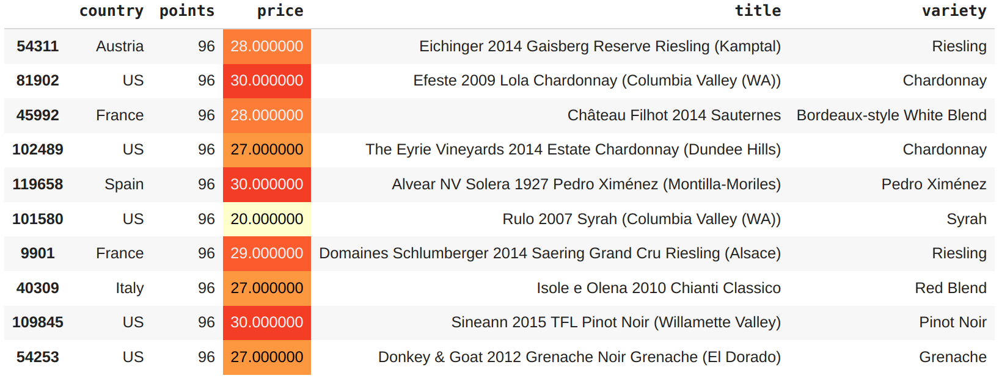
Já nessa lista, se o cliente estiver disposto a gastar um pouco mais. A melhor opção seria um vinho dos EUA de 96 pontos por $20.
# top 10 com valor entre $30 e $50
between_30_and_50 = df1.drop(["description", "province", "winery"], axis=1)
between_30_and_50 = between_30_and_50.query("price > 30 and price <= 50")
between_30_and_50 = between_30_and_50.sort_values(by="points", ascending=False)[:10]
between_30_and_50.style.background_gradient(cmap='YlOrRd',high=0.5, subset=["price"])
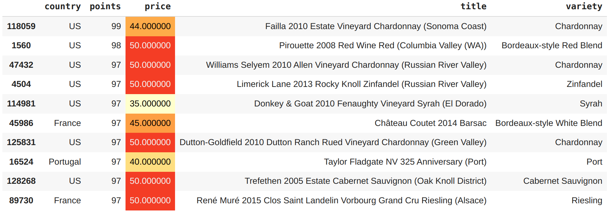
Se a preferência do cliente for da variedade
Chardonnay, nesse filtro é possível levar um vinho de 99 pontos por $44.
# top 10 com valor acima de $50
above_50 = df1.drop(["description", "province", "winery"], axis=1)
above_50 = above_50.query("price > 50")
above_50 = above_50.sort_values(by="points", ascending=False)[:10]
above_50.style.background_gradient(cmap='YlOrRd',high=0.5, subset=["price"])
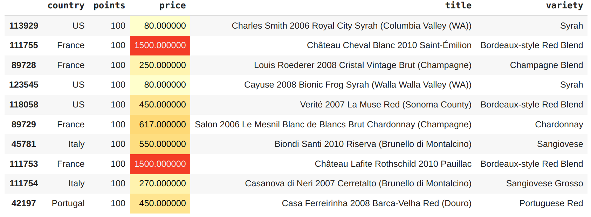
Por $80 é possível experimentar o sabor de um vinho de 100 pontos, com duas opções:
Charles Smith 2006 Royal City SyraheCayuse 2008 Bionic Frog Syrah, ambos dos EUA.
Nossa última tarefa na análise é descobrir quais palavras são mais utilizadas para descrever um vinho. Para isso podemos utilizar a biblioteca wordcloud que separa cada palavra em um texto e nos permite filtrar as de maior ocorrência, gerando uma nuvem de palavras.
Primeiro vamos importar a biblioteca e combinar todas as descrições das avaliações em um só texto:
from PIL import Image
from wordcloud import WordCloud, STOPWORDS
text = df1["description"][1]
text = " ".join(i for i in df1["description"])
len(text)
29653210
Temos agora um imenso texto agrupado. A biblioteca disponibiliza uma funcionalidade chamada stopwords que são uma lista de palavras que serão eliminadas no processo de criação da nossa nuvem de palavras.
stopwords = set(STOPWORDS)
stopwords.update(["drink", "now", "wine", "flavor", "flavors"])
wordcloud = WordCloud(stopwords=stopwords,
background_color="white",
width=2048,
height=1024,
max_words=1000).generate(text)
Com a nuvem de palavras pronta, agora só precisamos plotar uma imagem exibindo as palavras mais utilizadas nas descrições de vinhos:
plt.figure(figsize=(20,18))
plt.imshow(wordcloud, interpolation="bilinear")
plt.axis("off");
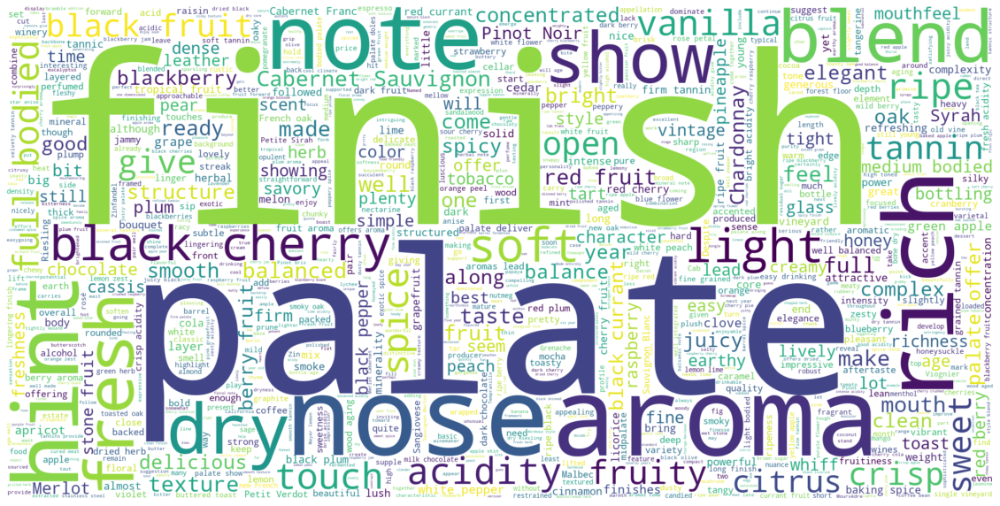
Conclusão
Agora podemos finalmente responder as perguntas que recebemos no começo deste projeto.
De onde vem o melhor vinho ?
R: A Inglaterra é quem em média produz vinhos soberbos. Mas se você quiser uma garrafa com pontuação perfeita de
100deve observar os vinhos de outros países: França, Itália, EUA, Portugal ou Austrália.O preço do vinho está relacionado com a qualidade ?
R: É nítido que o preço do vinho está relacionado com a qualidade. Mas se você souber onde procurar, pode encontrar um vinho de $4 que possui apenas 3 pontos abaixo de uma garrafa que custa $3.300.
Certas variedades de uvas são de maior qualidade ?
R: Todas as variedades estão na mesma situação (niveladas). A maior aposta com base nos dados é
Pinot Noir.Qual é o melhor vinho em cada faixa de preço ?
R: Encontramos um vinho perfeito para cada orçamento. Com alguns destaques.
Que palavras são mais utilizadas para descrever um vinho ?
R: Como pudemos ver na nuvem de palavras, certos termos aparecem uma vez ou outra nas descrições, termos como
finishepalateaparecem em boa parte das avaliações.
WIP